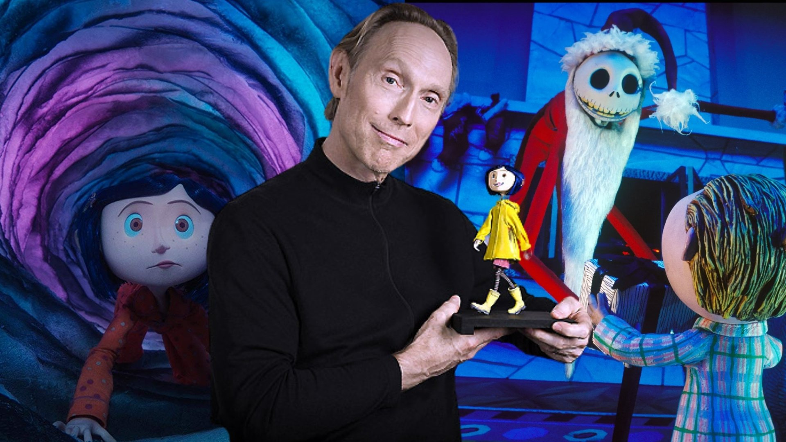
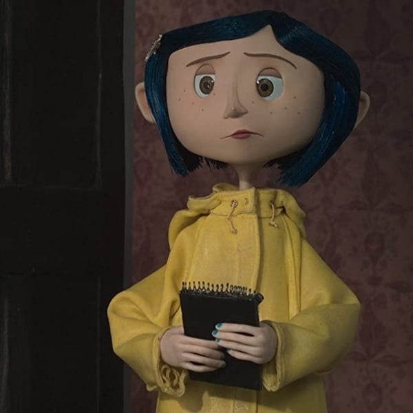
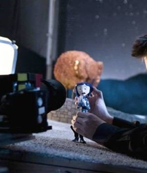

Una niña descubre una puerta secreta en su nueva casa y entra a una realidad alterna que la refleja fielmente de muchas formas.

Coraline se muestra bastante curiosa a la mayoría de cosas en el palacio rosa, y siempre se queja por todo. Es bastante teztaruda, y tiene mucha imaginación. Sin embargo, es también valiente y realista, y muy ingeniosa en las situaciones difíciles. No tiene miedo a la Otra madre (por lo que la mata constante mente) y no le falta sangre caliente a la hora de afrontar peligros. Por supuesto, también es ingenua y puede ser engañada con los regalos de la perversa villana.

Wybourne Lovat, también conocido como Wybie , es el nieto geek y ansioso de once años del propietario de The Pink Palace Apartments . Sólo aparece en la adaptación cinematográfica porque el espectador "no tendría a una chica caminando por ahí, hablando sola de vez en cuando".
Este felino negro y esquelético de ojos azul eléctrico vive en los alrededores del Pink Palace, y parece llevar allí desde que se construyó. Conoce el peligro que allí vive, y sabe que si no ayuda a Coraline, acabará como todos los otros niños desaparecidos... Parece tener poderes mágicos, pues puede viajar de un mundo a otro sin necesidad de atravesar el túnel mágico, y además, puede hablar en el "Otro Mundo".

Coraline y la puerta secreta (Coraline) es una película de animación stop-motion estadounidense del 2009 basada en una novela homónima de Neil Gaiman. Fue escrita y dirigida por Henry Selick (El extraño mundo de Jack, Jim y el Durazno Gigante y Monkeybone) y producida por Claire Jennings.
El argumento de Los mundos de Coraline trata de una niña que, al mudarse a su nuevo hogar, descubre una pequeña puerta escondida en su casa. Aburrida de intentar llamar la atención de sus padres constantemente, encuentra detrás de esta puerta una realidad alternativa bastante parecida a la que ya es su vida.
Uno de los estudios que producen este tipo de películas son los estudios Laika, quienes han producido diversos largometrajes como ahora Kubo and the Two Strings (2016) y The Boxtrolls (2014). Pero la primera película producida por esta compañía fue Coraline.
Coraline Dakota Fanning Ximena Sariñana Andrea Rius Madre/Otra madre Teri Hatcher Patricia Palestino Ana Jiménez Padre/Otro padre John Hodgman Rubén Cerda Gabriel Jiménez El Gato Keith David Blas García Enrique Jordá Wybie Robert Bailey, Jr. Bruno Pinasco Raúl Rojo Señorita April Spink Jennifer Saunders Gaby Cárdenas Raquel Cubillo Señorita Miriam Forcible Dawn French Laura Luz Paulette Whitaker Señor Alexander Bobinsky Ian McShane Héctor Lee Rafael Azcárraga
Una adaptación teatral, con música y canciones escritas por Stephin Merritt y re-escrita por David Greenspan, fue estrenada el 6 de mayo de 2009, producida por MCC Teatro y Producciones de Amor Cierto Fuera-Broadway en El teatro "Lucille Lortel". La pequeña Coraline de nueve años fue interpretada por Jayne Houdyshell una mujer adulta, y la Otra Madre fue interpretada por David Greenspan.
End Credits Song" (Canción de los créditos finales) – 1:54 Corresponde a secuencia de créditos finales al finalizar la película. Ejecutado por: Bruno Coulais / The Children's Choir Of Nice / Hungarian Symphony Orchestra "Dreaming" (Soñando) – 2:20 Esta canción se escucha justo en la secuencia de apertura antes de comenzar la película como tal, es cuando vemos en pantalla a una muñeca vieja que viene flotando en el aire, pasa a través de una ventana y enseguida es agarrada por un par de manos de agujas las cuales van descosiendo a la muñeca para reemplazarle la vestido, el cabello de hilo de estambre, los ojos de botones y el relleno interior. La voz masculina que se escucha susurrando varias veces la palabra "Dreaming" es el mismo Bruno Colais grabada en una maqueta previa y mezclada posteriormente en estudio con la canción coral de los Niños de Niza. Ejecutado por: Bruno Coulais / Teri Hatcher / The Children's Choir Of Nice / Hungarian Symphony Orchestra / Bernard Paganotti "Installation" (Instalación) – 2:28 Corresponde a la escena en que se marcha el camión de la mudanza y el gato ve cuando sale Coraline para conocer el entorno... De un montón de ramas cortadas de roble venenoso a la entrada del abandonado jardín, Coraline toma una vara zahorí (una rama en forma de Y) y comienza a buscar un viejo aljibe (pozo profundo) que se supone hay en los alrededores. La lírica de la canción es similar a la del tema "Exploration" (pista #5), solo en esta ("Installation") el niño que la canta tiene un tono de voz ligeramente más agudo que la del que interpreta la Pista #5 Ejecutado por: Hélène Breschand / Bruno Coulais / The Children's Choir Of Nice / Hungarian Symphony Orchestra / Mathilde Pellegrini